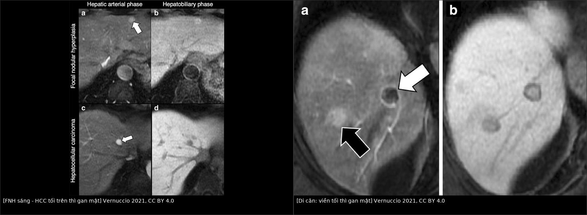
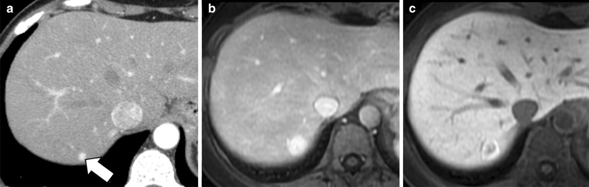
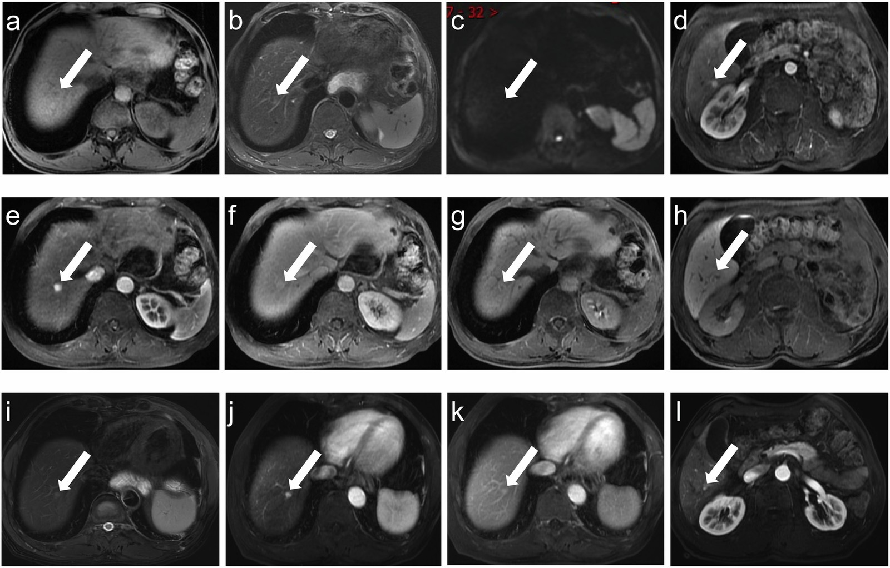
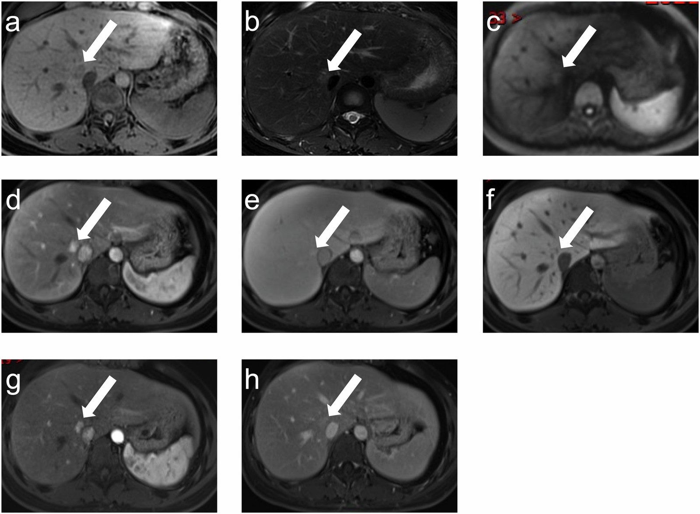
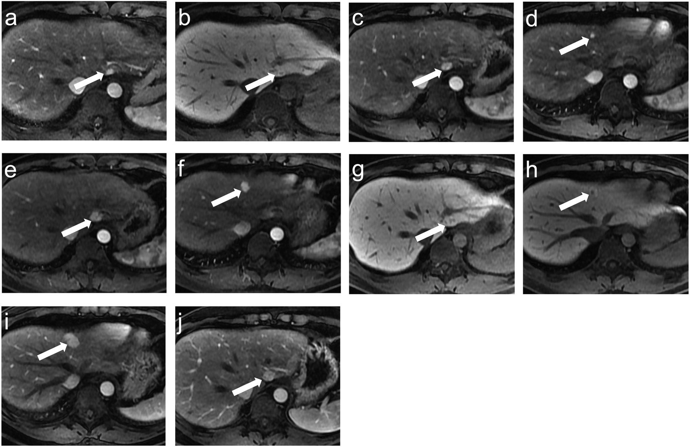

1733 — Nốt tái tạo lành tính FNH-like sau hóa trị: "di căn giả" trên MRI gan mật / Chemotherapy-induced FNH-like nodules: the pseudometastasis on hepatobiliary MRI
Tags: pattern:not-gan pattern:nhieu-o pattern:ngam-dong-mach pattern:gia-di-can pattern:gan-lanh-tinh vung:gan vung:gan-mat protocol:MRI-gan protocol:MRI-gan-DWI protocol:CT-bung-co-can-quang protocol:sieu-am-bung score:RECIST-1.1 incidentaloma:not-gan
Mức chắc chắn (certainty): tổng hợp y văn (literature synthesis) — số liệu đọc trực tiếp từ toàn văn, không lấy từ abstract: đoàn hệ 38 bệnh nhân/63 nốt FNH sau hóa trị (Insights into Imaging 2024, PMC11347512, CC BY 4.0), bài tổng quan phổ tổn thương tăng tín hiệu thì gan mật (Insights into Imaging 2021, PMC7801550, CC BY 4.0), tổng quan tổn thương gan do hóa trị trên MRI (Diagnostics 2022, PMC9029929, CC BY) và bài SOS do oxaliplatin của repo (bài 1910). Các ca nguyên văn giữ đúng chú thích gốc (Fig/ID); chỗ nguồn tự mâu thuẫn được ghi rõ ngay dưới số liệu.
1. Tổng quan bệnh học – cơ chế hình ảnh
- Vấn đề thực hành: bệnh nhân ung thư (vú, đại trực tràng, dạ dày) đang theo dõi sau hóa trị, lần chụp này xuất hiện nốt gan MỚI. Theo phản xạ, "nốt mới = di căn tiến triển" → đổi phác đồ, xạ trị, mổ. Nhưng sau oxaliplatin hoặc cyclophosphamide, một phần các nốt này là tăng sản tái tạo lành tính kiểu FNH (FNH-like lesion / multiacinar regenerative nodule) — không cần điều trị gì. Đây là chỗ mà một thì chụp MRI gan mật đổi hoàn toàn quyết định điều trị.
- Cơ chế bệnh sinh (vì sao lại là gan, vì sao lại sau hóa trị):
- Oxaliplatin gây tổn thương tế bào nội mô xoang gan → hội chứng tắc xoang gan (sinusoidal obstruction syndrome, SOS) với giãn xoang, xuất huyết vi thể, xơ hóa quanh xoang; mô bệnh thấy tổn thương xoang ở 19–52% bệnh nhân, tới 51% trong loạt 154 ca cắt gan (bài 1910).
- Hậu quả là tưới máu gan không đều: vùng giảm tưới máu teo lại, xen kẽ vùng tăng tưới máu; vùng tăng tưới máu bị tăng sản tế bào gan → nốt tái tạo. Nốt một tiểu thùy (monoacinar) = tăng sản nốt tái tạo (nodular regenerative hyperplasia, NRH); nốt nhiều tiểu thùy (multiacinar) = FNH-like.
- Cyclophosphamide (nhóm alkyl hóa) làm cạn glutathione trong tế bào nội mô xoang → cùng con đường tổn thương xoang; trên lâm sàng nhóm này xuất hiện sớm hơn và ở nữ trẻ nhiều hơn.
- Vì thế FNH-like sau hóa trị được xem là biểu hiện MUỘN của SOS, không phải u thật: tế bào gan bình thường, không loạn sản, mô đệm có ống mật phản ứng và động mạch bất thường — không có đột biến sinh ung.
- TẠI SAO nốt này sáng trên thì gan mật (vật lý + mô học): thuốc cản quang gan mật (gadoxetate disodium — Primovist/Eovist; gadobenate dimeglumine — Multihance) bị tế bào gan bắt qua chất vận chuyển OATP1B1/OATP1B3 ở mặt xoang rồi thải vào đường mật qua MRP2. Ở thì gan mật (hepatobiliary phase, HBP) — 10–20 phút với gadoxetate, 60–120 phút với gadobenate — nhu mô gan bình thường sáng lên, còn mô không có tế bào gan (di căn, cholangiocarcinoma) tối đi. Nốt FNH/FNH-like vẫn có tế bào gan và giữ (hoặc tăng) biểu hiện OATP → đồng tín hiệu hoặc tăng tín hiệu so với gan. Đây là lý do vật lý khiến HBP là "cửa ải" phân biệt, không phải một mẹo hình ảnh.
- Vì sao có "viền tăng tín hiệu" (ring hyperintensity): trong FNH-like, OATP8 phân bố ở tế bào gan NGOẠI VI mạnh hơn trung tâm (trung tâm là mô đệm/xơ, ít tế bào gan) → HBP thấy viền sáng + trung tâm tương đối tối, kiểu "bánh vòng". Dấu này có độ đặc hiệu 100% cho FNH trong một nghiên cứu (Bilreiro), và gặp ở 57,6% (19/33) nốt FNH-like sau hóa trị có ảnh HBP.
- Vì sao ngấm mạnh thì động mạch mà KHÔNG washout: FNH-like có động mạch nuôi bất thường, dày, xoắn và thiếu nhánh tĩnh mạch cửa trong nốt → thì động mạch (20–35 giây) ngấm mạnh, đồng nhất; nhưng mô là tế bào gan bình thường nên thì cửa/muộn không thải thuốc (không washout). Di căn/HCC thì ngược lại: ngấm rồi thoát.
- Vì sao không hạn chế khuếch tán: DWI/ADC phản ánh mật độ tế bào và độ nhớt mô; FNH-like là tế bào gan xếp bình thường, không hoại tử, không phù keo, nên đồng tín hiệu trên DWI (31/63) hoặc tăng nhẹ (32/63, do hiệu ứng T2 shine-through) và không tụt ADC; di căn đặc thì ADC thấp.
- Dịch tễ – số liệu thực:
- Đoàn hệ 38 bệnh nhân / 63 nốt (2010–2022, ung thư vú 18, đại trực tràng 17, dạ dày 2, lymphoma 1): khoảng cách trung vị từ lúc kết thúc hóa trị đến khi phát hiện nốt = 30,4 tháng (12,9–49,4): 36,0 tháng với oxaliplatin, 12,9 tháng với cyclophosphamide (p = 0,002).
- 55,3% (21/38) có nhiều nốt ngay lần đầu (bài gốc phần Tóm tắt ghi 60,5% (23/38) — chênh lệch nội tại của nguồn, giữ nguyên cả hai và không dùng để kết luận); kích thước trung vị 11,5 mm (8,4–15,1) — nhỏ hơn nhiều so với FNH kinh điển (trung bình 43,0 mm).
- Theo dõi trung vị 32,5 tháng: 13,5% nốt nhỏ lại, 10,8% to lên, 8,1% tăng số nốt, thêm 10,8% vừa to vừa tăng số — tức 15/37 (40,5%) có thay đổi, không ca nào tiến triển bệnh.
- Loạt 14 bệnh nhân của Furlan: FNH-like xuất hiện de novo sau oxaliplatin, tới 42% nốt to lên khi theo dõi, khoảng cách trung bình 47,6 tháng (trung vị 42,5; 10–120).
- Mốc thời gian phản biện: di căn đại trực tràng hiếm khi xuất hiện mới sau 3,5 năm kể từ lúc mổ (Walter) — nên nốt mới ở năm thứ 4–10 sau hóa trị oxaliplatin không mặc định là di căn, còn nốt mới trong 6–18 tháng đầu thì ngược lại, phải coi là di căn cho đến khi chứng minh khác.
- Hình ảnh đặc trưng (63 nốt, đoàn hệ trên): T1 đồng tín hiệu 36 / giảm nhẹ 27; T2 đồng 23 / tăng nhẹ 40; DWI đồng 31 / tăng nhẹ 32; ngấm mạnh đồng nhất thì động mạch 63/63 (100%); washout 0/63 (0%); sẹo trung tâm 9/63 (14,3%); không nốt nào có nang/hoại tử; trong 33 nốt có HBP: tăng tín hiệu bền 26/33 (78,8%), viền tăng tín hiệu 19/33 (57,6%).
2. Mẫu hình + chẩn đoán phân biệt theo vị trí & bối cảnh (Gamut)
- Khuôn 1 — Nốt MỚI, nhỏ (8–15 mm), NHIỀU ổ, ở bệnh nhân đã hóa trị oxaliplatin/cyclophosphamide ≥ 12 tháng. Gamut: FNH-like sau hóa trị vs di căn gan vs NRH vs u máu nhỏ. Chốt: thì gan mật (tăng tín hiệu/viền tăng = FNH-like; giảm tín hiệu = di căn).
- Khuôn 2 — Nốt đơn độc, to dần, không có sẹo trung tâm. Gamut: FNH-like đang tăng sản vs di căn vs HCC vs adenoma. Chốt: washout + ADC + HBP; tăng kích thước một mình KHÔNG phải tiêu chuẩn ác tính (42% FNH-like to lên).
- Khuôn 3 — Nhiều nốt ≤ 3 mm + lách to + giảm tiểu cầu, sau oxaliplatin. Gamut: NRH/SOS vs di căn kê (miliary) vs xơ gan. Chốt: lưới giảm tín hiệu trên HBP + nốt đồng tín hiệu + không hạn chế khuếch tán; NRH thoái triển trong ≤ 9 tháng sau chu kỳ oxaliplatin cuối.
- Khuôn 4 — Nốt ngấm mạnh thì động mạch ở bệnh nhân XƠ GAN. Gamut: HCC vs nốt tái tạo vs FNH-like. Chốt: washout + vỏ bao + HBP giảm tín hiệu = HCC; nốt tái tạo xơ gan đồng/tăng tín hiệu HBP.
- Khuôn 5 — Gan biến dạng, vỏ co kéo, nhiều nốt bờ gan sau hóa trị. Gamut: giả xơ gan (pseudocirrhosis) vs xơ gan thật vs di căn đa ổ. Chốt: không có dấu hiệu tăng áp cửa thực sự + bệnh cảnh đáp ứng điều trị (bài 1648).
- Gợi nhớ "FNH-like": F — Follow-up dài (30–48 tháng sau hóa trị) · N — Nhiều nốt, Nhỏ · H — HBP tăng tín hiệu/viền tăng · L — Lành, không washout, Lui/nhỏ lại khi theo dõi.
3. Bảng so sánh phân biệt (ma trận đối chiếu)
| Thực thể (entity) | Hình ảnh điển hình (CT / MRI / DWI) | Chốt vào (rule-in) | Chốt loại (rule-out) | Gợi ý xác nhận |
|---|---|---|---|---|
| FNH-like sau hóa trị (bài này) | Nốt 8–15 mm, nhiều ổ; T1 đồng/giảm nhẹ, T2 đồng/tăng nhẹ; ngấm mạnh đồng nhất thì động mạch 100%; không washout; DWI không hạn chế; HBP tăng tín hiệu 78,8% hoặc viền tăng 57,6%; sẹo trung tâm chỉ 14,3% | Tiền sử oxaliplatin/cyclophosphamide + nốt mới + ngấm động mạch đồng nhất + HBP tăng tín hiệu/viền tăng + không washout | HBP giảm tín hiệu toàn bộ + washout + ADC thấp → không phải FNH-like | MRI gan mật (HBP 15–20 phút); theo dõi 3–6 tháng; chỉ sinh thiết khi không điển hình |
| Di căn gan | Nốt giảm tỷ trọng, ngấm viền, washout thì cửa/muộn; DWI hạn chế khuếch tán; HBP giảm tín hiệu (viền giảm + trung tâm "mây" ở một số ca) | HBP giảm tín hiệu + washout + ADC thấp + tăng ≥ 20% và ≥ 5 mm theo RECIST 1.1 | HBP tăng tín hiệu đồng nhất hoặc viền tăng → không phải di căn | So ảnh cũ cùng thì; PET-FDG; sinh thiết nếu còn nghi và đổi điều trị |
| NRH (tăng sản nốt tái tạo) | Nốt ≤ 3 mm, rất nhiều, không viền; lưới giảm tín hiệu nền trên HBP; lách to, giảm tiểu cầu | Nốt nhỏ + lưới HBP + bệnh cảnh tăng áp cửa sau oxaliplatin | Nốt > 5 mm có viền và washout → không phải NRH đơn thuần | MRI HBP + đếm tiểu cầu; NRH thoái triển ≤ 9 tháng sau ngừng oxaliplatin |
| FNH kinh điển (không hóa trị) | Khối lớn (trung bình 43 mm), sẹo trung tâm (35% nếu < 3 cm), HBP tăng tín hiệu | Sẹo trung tâm + HBP tăng + không tiền sử hóa trị | Nhiều nốt nhỏ < 15 mm sau hóa trị → nghĩ FNH-like hơn FNH kinh điển | MRI gan mật; không cần can thiệp |
| HCC | Xơ gan/HBV; ngấm mạnh thì động mạch + washout không ngoại vi; vỏ bao; HBP giảm tín hiệu | LI-RADS 5: ngấm + washout + vỏ bao/tăng kích thước trong gan xơ | Không washout, HBP tăng tín hiệu → không phải HCC | AFP + CEUS/CT 4 thì; sinh thiết nếu không đủ tiêu chuẩn (bài 121) |
| Giả xơ gan (pseudocirrhosis) | Vỏ gan co kéo, teo thùy, nốt bờ gan, có thể cổ trướng; thường sau hóa trị đáp ứng | Biến dạng vỏ + teo nhu mô + bệnh cảnh đáp ứng | Gan to, bờ nhẵn, không co kéo → không phải giả xơ | CT/MRI + đối chiếu diễn tiến (bài 1648) |
| U máu (hemangioma) | T2 rất sáng "bóng đèn", ngấm viền ngoại vi từng đợt rồi đầy dần; HBP giảm tín hiệu | T2 rất sáng + ngấm ngoại vi – trung tâm theo thì | Ngấm đồng nhất ngay thì động mạch + HBP tăng → không phải u máu | Siêu âm + MRI; không sinh thiết |

Trái (hai hàng): hàng trên — FNH tăng tín hiệu trên thì gan mật; hàng dưới — HCC giảm tín hiệu (nam 58 tuổi, ung thư vòm họng). Phải: hai di căn đại tràng đều có viền giảm tín hiệu trên thì gan mật, một tổn thương còn "mây" tăng tín hiệu trung tâm. Nguyên tắc: có tế bào gan → sáng; không có tế bào gan → tối. Nguồn: Vernuccio F và cs., Insights Imaging 2021, Fig. 9–10 (CC BY 4.0); ảnh ghép letterbox.Ba dấu hiệu quyết định "lành hay di căn"
- Thì gan mật là trọng tài: 26/33 (78,8%) nốt FNH-like tăng tín hiệu bền; 19/33 (57,6%) có viền tăng tín hiệu — dấu viền này có độ đặc hiệu 100% cho FNH trong nghiên cứu của Bilreiro. Ngược lại, di căn giảm tín hiệu vì không có tế bào gan bắt OATP.
- Không washout: 0/63 nốt FNH-like có washout; 63/63 ngấm mạnh thì động mạch. Cặp "ngấm mạnh – không thoát" là chữ ký của mô gan lành.
- Không hạn chế khuếch tán: DWI đồng tín hiệu 31/63, tăng nhẹ 32/63 (T2 shine-through), không nốt nào tụt ADC; di căn đặc thì ngược lại.
4. Protocol chụp + cách theo dõi
- Cộng hưởng từ gan có cản quang gan mật là tiêu chuẩn (không phải CT): gadoxetate disodium 0,025 mmol/kg — thì gan mật chụp 15–20 phút sau tiêm; gadobenate dimeglumine 0,1 mmol/kg — thì gan mật 60–120 phút. Lát cắt 4 mm, FOV 360–420 mm, ma trận 240–320 (đoàn hệ trên dùng đúng thông số này).
- Chuỗi xung tối thiểu: T1 in/out phase (phát hiện mỡ), T2 fat-sat, DWI b = 0 và 800 s/mm² kèm bản đồ ADC, động mạch – tĩnh mạch cửa – chuyển tiếp/muộn, HBP.
- CT chỉ để phát hiện, không để khẳng định: nốt ngấm mạnh thì động mạch trên CT ở bệnh nhân ung thư không loại trừ và cũng không khẳng định FNH-like — phải chuyển MRI gan mật.
- Siêu âm: nốt thường giảm âm, không có dấu hiệu đặc hiệu; CEUS có thể thấy ngấm mạnh thì động mạch nhưng không thay HBP.
- Theo dõi (đề xuất thực hành, không có guideline riêng):
- Nốt điển hình (ngấm động mạch đồng nhất + HBP tăng/viền tăng + không washout): MRI gan mật lặp 3–6 tháng, sau đó 6–12 tháng; không sinh thiết, không áp RECIST cho tổn thương lành.
- Nốt to lên vẫn giữ HBP tăng → tiếp tục theo dõi (tới 42% nốt to lên, thời gian theo dõi tới 79,8 tháng trong ca nguyên văn).
- Sinh thiết/kim lớn chỉ khi: HBP giảm tín hiệu toàn bộ, có washout, ADC thấp, marker tăng, hoặc bệnh nhân cần bằng chứng mô học trước mổ — nhớ nguy cơ gieo mầm theo đường kim và chọn đường kim qua phần gan sẽ cắt.
- Mốc thời gian dùng để phản biện: nốt mới sau 3,5 năm kể từ mổ đại trực tràng hiếm khi là di căn (Walter), trong khi FNH-like xuất hiện trung vị 30–48 tháng sau hóa trị — trùng đúng cửa sổ "dễ đọc nhầm nhất".
flowchart TD
A["Bệnh nhân ung thư theo dõi: nốt gan MỚI"] --> B{"Có tiền sử oxaliplatin hoặc cyclophosphamide?"}
B -- "Không" --> C["Coi là di căn cho đến khi chứng minh khác: CT 4 thì + MRI gan mật"]
B -- "Có" --> D{"Kích thước và số nốt"}
D -- "Nhiều nốt 8-15 mm" --> E["MRI gan mật: đánh giá thì động mạch + HBP + DWI"]
D -- "Một nốt lớn hơn 3 cm" --> E
E --> F{"HBP tăng tín hiệu hoặc viền tăng?"}
F -- "Có" --> G{"Có washout hoặc ADC thấp?"}
G -- "Không" --> H["FNH-like: theo dõi MRI 3-6 tháng, KHÔNG sinh thiết, KHÔNG đổi phác đồ"]
G -- "Có" --> I["Nghi di căn hoặc HCC: sinh thiết / PET / hội chẩn"]
F -- "Không, giảm tín hiệu toàn bộ" --> I
H --> J{"Nốt to lên khi theo dõi?"}
J -- "Có nhưng HBP vẫn tăng" --> K["Tiếp tục theo dõi: 42% nốt FNH-like to lên"]
J -- "Có kèm HBP giảm hoặc washout mới" --> I
5. Biến thể bình thường và cạm bẫy
- Cạm bẫy 1 — "To lên = ác tính". Tới 42% nốt FNH-like to lên (Furlan) và trong ca nguyên văn nốt tăng kích thước liên tục tới 79,8 tháng mà vẫn lành. Kích thước một mình không đủ; phải đọc lại HBP ở lần chụp mới.
- Cạm bẫy 2 — HBP giảm tín hiệu vẫn có thể là FNH-like. 7/33 (21,2%) nốt không tăng tín hiệu bền; ca Fig. 4 dưới đây giảm nhẹ tín hiệu HBP mà vẫn là FNH-like và nhỏ lại sau 28,4 tháng. Vì vậy một dấu âm không loại trừ — cần tổng hợp động mạch + DWI + diễn tiến.
- Cạm bẫy 3 — "Nhiều nốt = di căn". 55–60% bệnh nhân có nhiều nốt ngay lần đầu; số lượng nhiều ủng hộ FNH-like sau hóa trị, không ủng hộ di căn đơn độc.
- Cạm bẫy 4 — Sẹo trung tâm vắng mặt. Chỉ 14,3% (9/63) nốt có sẹo trung tâm vì nốt quá nhỏ (trung vị 11,5 mm); sẹo trung tâm chỉ thấy ở 35% FNH < 3 cm. Thiếu sẹo không loại trừ FNH.
- Cạm bẫy 5 — Nhầm thì. Viền tăng tín hiệu HBP của FNH-like rất giống viền giảm tín hiệu của di căn nếu đặt cửa sổ sai hoặc so sánh nhầm thì (chuyển tiếp vs gan mật). Luôn ghi rõ thời điểm chụp tính bằng phút sau tiêm.
- Cạm bẫy 6 — Bỏ sót SOS nền. Nốt FNH-like thường đi kèm lưới giảm tín hiệu HBP, lách to, giảm tiểu cầu — đọc các dấu này để không bỏ tăng áp cửa do oxaliplatin (bài 1910), vì nó ảnh hưởng quyết định cắt gan.
- Cạm bẫy 7 — Nhóm cyclophosphamide trẻ, nữ, xuất hiện SỚM (12,9 tháng). Ở bệnh nhân ung thư vú trẻ đang theo dõi, nốt mới trong năm đầu dễ bị mặc định là di căn — nhưng nhóm này lại đúng là nhóm FNH-like sớm nhất.
6. Tự lượng giá — Blind Quiz
Ca 1 — Nữ 40 tuổi, ung thư đại tràng xích ma đã mổ, hóa trị XELOX. Theo dõi 2 năm: CT thấy nốt tăng đậm độ thì động mạch ở gan phải; MRI 2 năm sau nốt TO LÊN. Di căn hay lành?

- Hỏi: (1) Vì sao nốt to lên lại không chứng minh di căn? (2) Thì nào quyết định? (3) Xử trí tiếp theo?
Bấm để hiện đáp án
- (a) CT thì động mạch: nốt tăng đậm độ (mũi tên) — không đặc hiệu. (b) MRI thì động mạch 2 năm sau: nốt vẫn ngấm mạnh và đã to hơn → đúng là tình huống dễ kết luận sai là di căn. (c) Thì gan mật: nốt có viền tăng tín hiệu → FNH-like, không phải di căn.
- Trả lời: (1) 42% nốt FNH-like to lên khi theo dõi; (2) thì gan mật; (3) theo dõi MRI 3–6 tháng, không sinh thiết, không đổi phác đồ.
- Nguồn: Vernuccio F và cs., Insights Imaging 2021, Fig. 8 (CC BY 4.0) — nữ 40 tuổi, ung thư đại tràng xích ma, XELOX.
- Phản biện: ca này không có mô bệnh; chẩn đoán dựa trên hình ảnh + theo dõi, đúng như thực hành nhưng là mức chắc chắn thấp hơn mô học.
Ca 2 — Nam 63 tuổi, ung thư dạ dày sau FOLFOX 10 chu kỳ. 29,7 tháng sau kết thúc: nốt 1 cm gan phải. Đọc từng thì rồi kết luận.

- Hỏi: (1) Nốt có washout không? (2) Dấu nào trên HBP? (3) Sau 49 tháng điều gì xảy ra và nó nói lên điều gì?
Bấm để hiện đáp án
- (a) T1 giảm nhẹ, (b) T2 tăng nhẹ, (c) DWI đồng tín hiệu (không hạn chế khuếch tán), (e) thì động mạch ngấm mạnh đồng nhất, (f) thì muộn KHÔNG washout, (g) HBP viền tăng tín hiệu. (d) và (h) cho thấy một nốt FNH thứ hai ở thùy trái — đúng kiểu nhiều ổ.
- Sau 49 tháng (i–l): cả hai nốt NHỎ LẠI → diễn tiến lành tính, khẳng định FNH-like.
- Trả lời: (1) Không; (2) viền tăng tín hiệu; (3) nhỏ lại — bằng chứng theo thời gian ủng hộ lành tính.
- Nguồn: Yang F và cs., Insights Imaging 2024, Fig. 3 (PMC11347512, CC BY 4.0).
Ca 3 — Nữ 28 tuổi, ung thư vú phải sau EC-T, 42,5 tháng sau hóa trị: nốt cạnh tĩnh mạch chủ dưới. Thì gan mật GIẢM nhẹ tín hiệu. Có phải di căn?

- Hỏi: (1) Vì sao đây là ca khó? (2) Theo dõi 28,4 tháng thấy gì? (3) Bài học?
Bấm để hiện đáp án
- (a) T1 giảm nhẹ, (b) T2 tăng nhẹ, (c) DWI đồng tín hiệu, (d) động mạch tăng tín hiệu, (e) thì muộn không washout, (f) HBP giảm nhẹ tín hiệu — tức không có viền tăng, đây là 21,2% nốt FNH-like "không điển hình".
- Sau 28,4 tháng (g–h): nốt nhỏ lại → lành tính.
- Bài học: một dấu HBP âm không đủ loại trừ; phải cộng không washout + không hạn chế khuếch tán + diễn tiến.
- Nguồn: Yang F và cs., Insights Imaging 2024, Fig. 4 (PMC11347512, CC BY 4.0).
Ca 4 (mở rộng) — Cùng bệnh nhân ung thư đại tràng, nốt mới ở phân thùy IV. Hai năm sau nốt to lên và xuất hiện nốt thứ hai.

Bấm để hiện đáp án
- Nốt 1 (mũi tên trắng) tăng tín hiệu cả thì động mạch và HBP ngay lần đầu; sau 1 năm to lên và xuất hiện nốt 2; sau 79,8 tháng cả hai tiếp tục to nhưng vẫn tăng tín hiệu thì động mạch và có viền tăng trên HBP.
- Kết luận: FNH-like đa ổ, tăng sản tiến triển theo thời gian — không phải di căn; đây là bằng chứng mạnh nhất rằng kích thước không phải tiêu chuẩn ác tính.
- Nguồn: Yang F và cs., Insights Imaging 2024, Fig. 2 (PMC11347512, CC BY 4.0) — nam 29 tuổi, ung thư đại tràng, XELOX 8 chu kỳ.
Bài liên quan chéo
- 1648 – Di căn gan ở ung thư vú (FNH-like là một hàng trong ma trận; bài này là bản chuyên sâu)
- 1910 – Hội chứng tắc xoang gan (SOS) (cơ chế nền: tổn thương xoang do oxaliplatin, lưới giảm tín hiệu HBP)
- 122 – U lành gan (FNH kinh điển, adenoma, u máu)
- 121 – Khối gan và LI-RADS (khi nốt nằm trong gan xơ: HCC)
- 1732 – Tổn thương gan do thuốc CDK4/6 và T-DXd (cùng bối cảnh "bất thường gan do điều trị ung thư")
Không dùng để chẩn đoán độc lập khi chưa có người hướng dẫn.